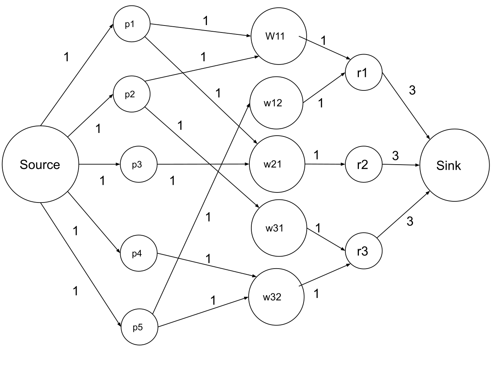
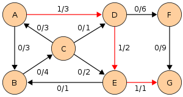
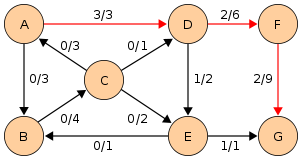
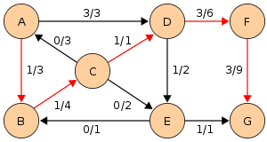
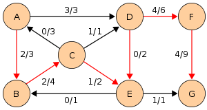
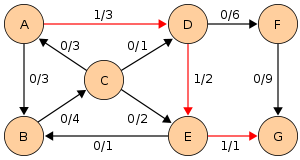
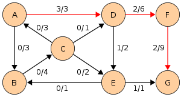
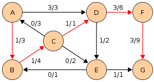
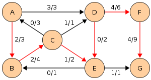

Maximum flow problem
In optimization theory, maximum flow problems involve finding a feasible flow through a flow network that obtains the maximum possible flow rate.
The maximum flow problem can be seen as a special case of more complex network flow problems, such as the circulation problem. The maximum value of an s-t flow (i.e., flow from source s to sink t) is equal to the minimum capacity of an s-t cut (i.e., cut severing s from t) in the network, as stated in the max-flow min-cut theorem.
Edmonds–Karp algorithm
In computer science, the Edmonds–Karp algorithm is an implementation of the Ford–Fulkerson method for computing the maximum flow in a flow network in O(|V||E|2) time. The algorithm was first published by Yefim Dinitz (whose name is also transliterated "E. A. Dinic", notably as author of his early papers) in 1970 and independently published by Jack Edmonds and Richard Karp in 1972. Dinic's algorithm includes additional techniques that reduce the running time to O(|V|2|E|).
The algorithm is identical to the Ford–Fulkerson algorithm, except that the search order when finding the augmenting path is defined. The path found must be a shortest path that has available capacity. This can be found by a breadth-first search, where we apply a weight of 1 to each edge. The running time of O(|V||E|2) is found by showing that each augmenting path can be found in O(|E|) time, that every time at least one of the E edges becomes saturated (an edge which has the maximum possible flow), that the distance from the saturated edge to the source along the augmenting path must be longer than last time it was saturated, and that the length is at most |V|. Another property of this algorithm is that the length of the shortest augmenting path increases monotonically. There is an accessible proof in Introduction to Algorithms.
Example
 







Code
Applications
- Baseball elimination
- Airline scheduling
- Circulation–demand problem
- Image segmentation